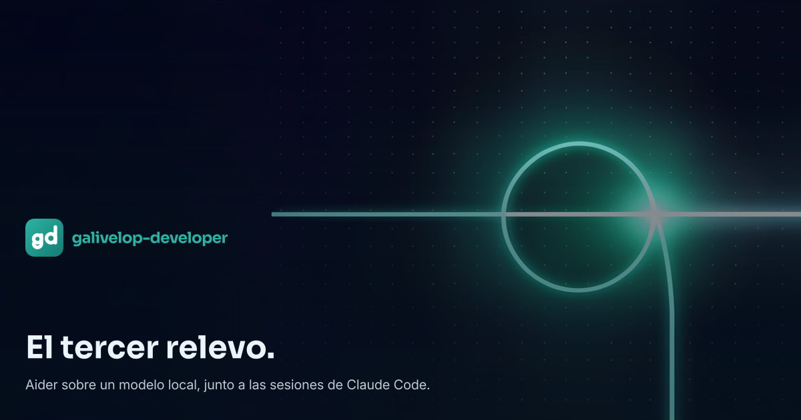
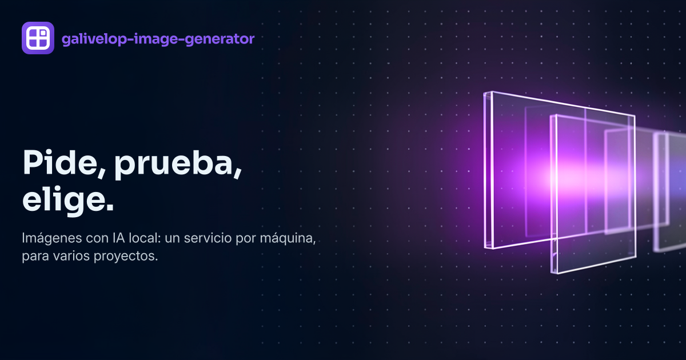
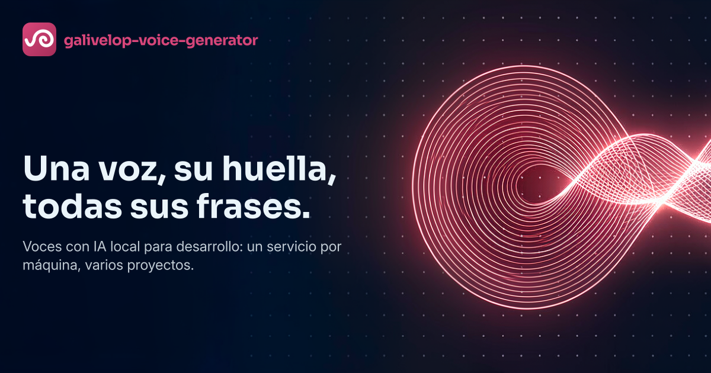
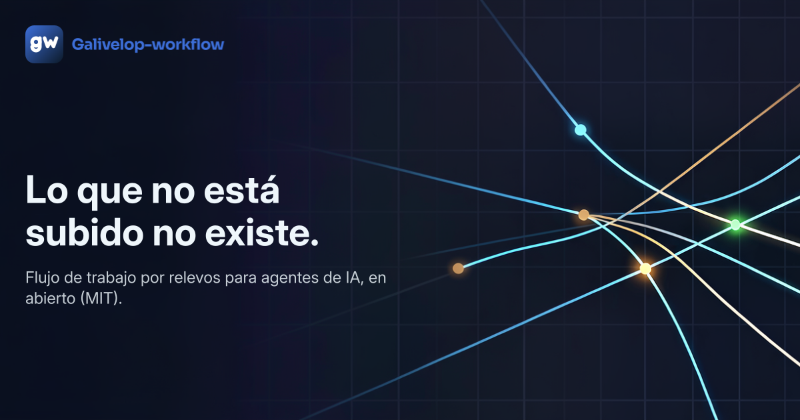
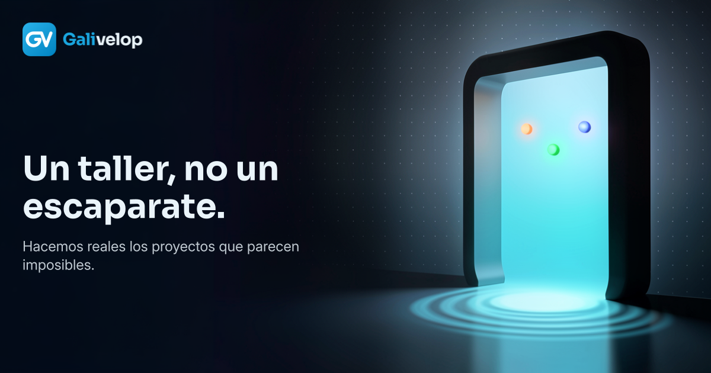
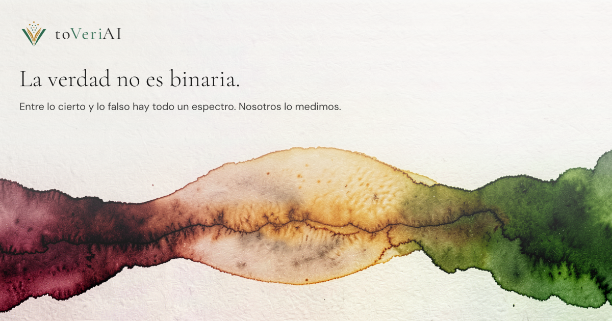

← rondas
Ronda r4
Pincha una imagen para verla a tamaño real. Marca sí/no y pega el veredicto en el chat.
galivelop-developer

og contraste 14.56:1, peor 11.82:1 · paleta 85.7 % · YAVG 36.94 galivelop-image-generator

og contraste 17.08:1, peor 16.49:1 · paleta 72.36 % · YAVG 47.9 galivelop-voice-generator

og contraste 16.97:1, peor 16.34:1 · paleta 70.22 % · YAVG 52.6 galivelop-workflow

og contraste 16.64:1, peor 15.86:1 · paleta 93.38 % · YAVG 43.02 portal

og contraste 17.04:1, peor 15.78:1 · paleta 66.95 % · YAVG 64.85 tarkor
og contraste 11.26:1, peor 6.97:1 · paleta 72.32 % · YAVG 168.91 toveriai

og contraste 15.5:1, peor 15.0:1 · paleta 66.95 % · YAVG 186.52 Veredicto